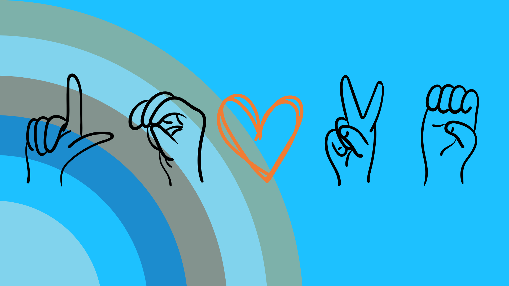
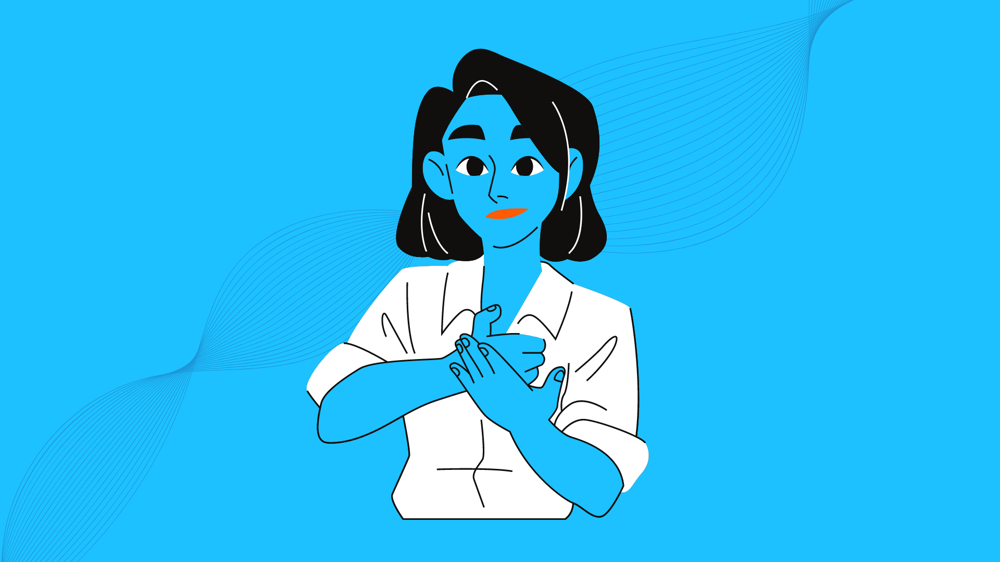
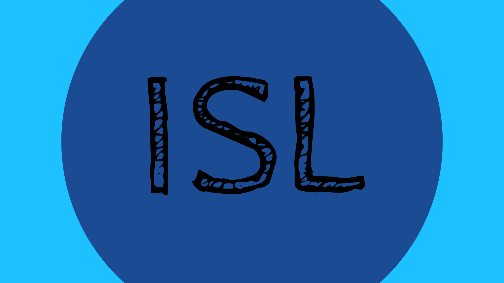
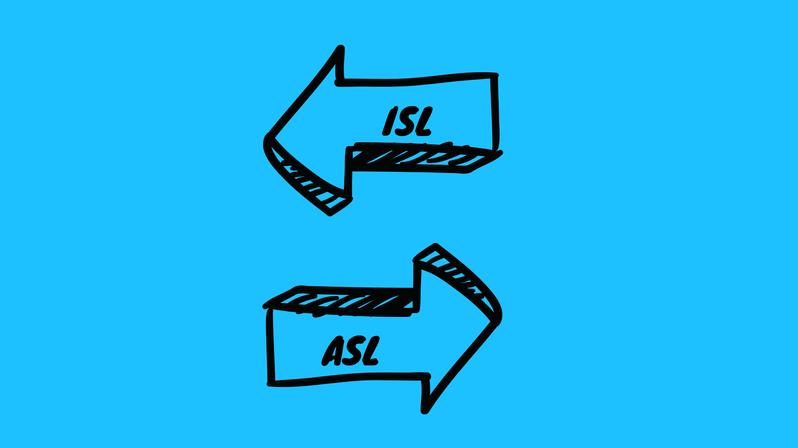
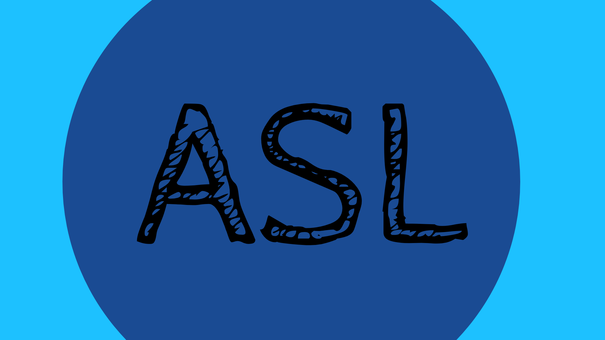
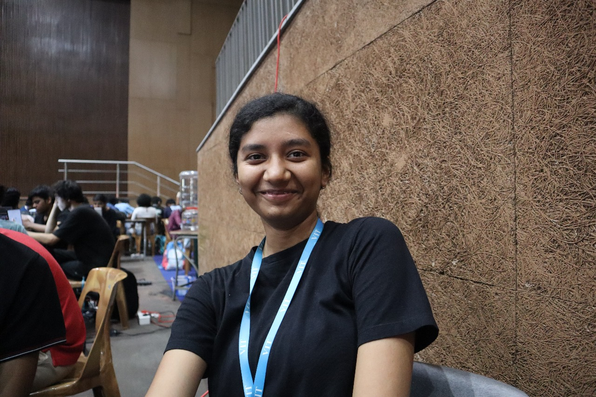

ABOUT
Welcome to our state-of-the-art platform that utilizes advanced machine learning techniques to bridge communication gaps through sign language recognition and translation. Our innovative algorithm combines the power of Long Short-Term Memory (LSTM) and Convolutional Neural Networks (CNN) to accurately detect motion and interpret sign language gestures captured in videos.
With our technology, users can effortlessly translate sign language motions into text, opening up a world of communication possibilities. Moreover, our platform supports multiple languages, including French, Spanish, and German, ensuring inclusivity and accessibility for diverse communities.
But we don't stop there. We've integrated a sophisticated machine learning model that verifies the accuracy of sign language gestures captured by the camera, providing real-time feedback and enhancing communication effectiveness. Experience seamless communication across languages and cultures with our revolutionary sign language recognition and translation platform. Join us in breaking down barriers and fostering meaningful connections for all.
Motion Detection in SL
Text to Speech Conversion
Learn the SL
Multi-Lingual text and speech
ISL Implementation
Important Features
EXPLORE DIFFERENT CATEGORIES

ISL
ISL (Indian Sign Language) and ASL (American Sign Language) are visual-gestural languages used by Deaf communities. ISL is used primarily in India, while ASL is used predominantly in the United States. Despite similarities in structure, vocabulary, and grammar, they are distinct languages with unique cultural influences and regional variations.

ISL Vs ASL
ISL (Indian Sign Language) and ASL (American Sign Language) are visual languages, each unique to its respective country. They convey meaning through gestures, facial expressions, and body movements. While sharing similarities in structure, they differ in vocabulary and cultural influences, reflecting the diverse communities they serve.

ASL
American Sign Language (ASL) is a natural language primarily used by Deaf communities in the United States and parts of Canada. It relies on handshapes, movements, and facial expressions to convey meaning. ASL has its own syntax and grammar, distinct from spoken English. It is a rich and expressive language integral to Deaf culture and identity.
THE TEAM
We are a dedicated team of four creators passionate about gesture technology, united with the goal of developing a groundbreaking sign language translator. Our endeavor encompasses the integration of cutting-edge machine learning models into our user interface through APIs, resulting in the implementation of several distinctive features. These features not only distinguish our project from existing sign language translator models but also serve as its unique selling points. We are eager to guide you through every aspect of this innovative venture.
Naman
Sriansh
Shilpi
Tejal
CONTACT
Any issues, reach us
Chennai, India
Phone: +91 8989012145
Email: kalingaDev@gmail.com
Phone: +91 8989012145
Email: kalingaDev@gmail.com